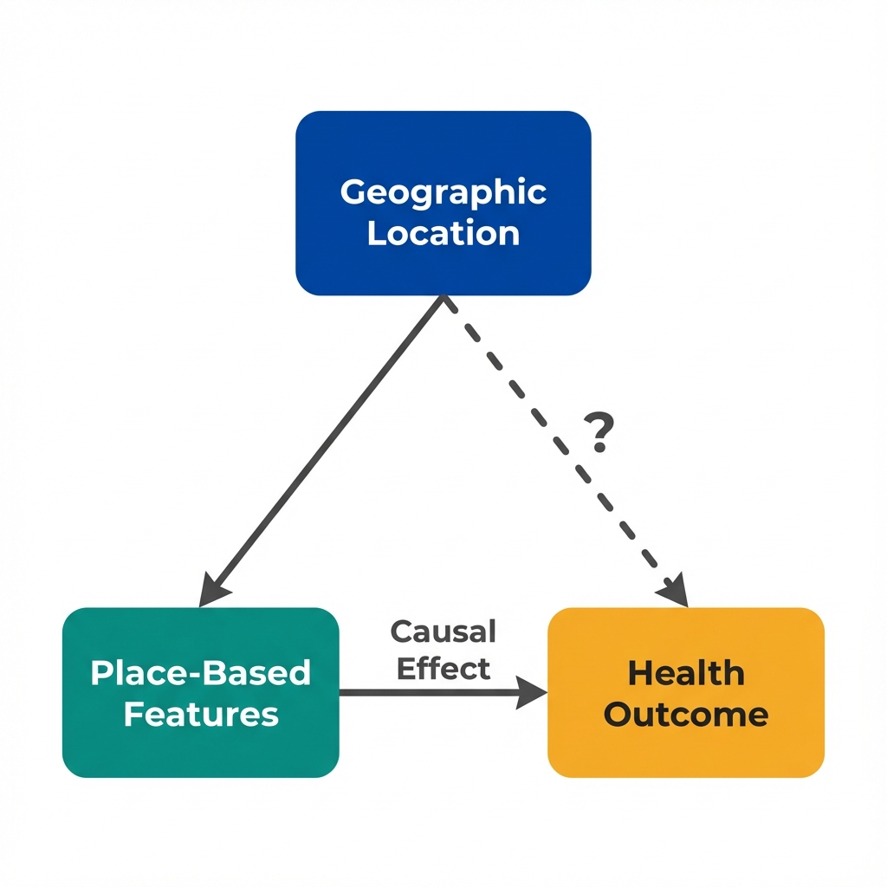
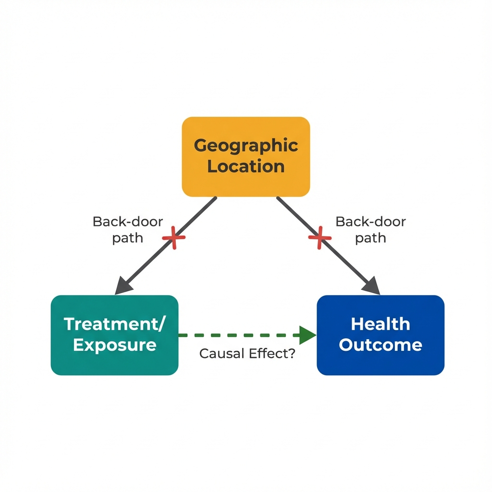

The Data
We observe that counties with stricter air quality regulations have lower asthma hospitalization rates. The correlation is strong. But should we include county fixed effects in our model? The answer depends on what question we're asking. (Data are simulated for illustration.)
Air Quality Regulation vs Asthma Hospitalizations
Two possible interpretations emerge.
Does stricter regulation cause fewer hospitalizations? Or do urban counties happen to have both stricter rules AND other factors that reduce asthma?
Geography as Treatment
Sometimes place-based variation IS the treatment effect you want to measure. In these cases, adding geographic fixed effects would remove the very thing you're studying.

When location IS the treatment: Fixed effects would absorb the causal effect.
Place-Based Treatment
A place-based treatment is an intervention or exposure that varies across geographic units and operates through the characteristics of that location. Examples include:
- State-level policy changes (Medicaid expansion, minimum wage)
- County health department programs
- Neighborhood walkability or food access
- Local air or water quality
For these treatments, geographic variation is informative, not a nuisance to be removed.
Geography can also be something else entirely.
What if location predicts both treatment AND outcome through a back-door path?
Geography as Confounder
Other times, geographic variation reflects unmeasured differences between places that affect both treatment and outcome. Here, fixed effects can block confounding paths.

When location is a confounder: Fixed effects can block the back-door path.
Geographic Confounding
Geographic confounding occurs when location predicts both treatment assignment and outcomes through unmeasured characteristics of that place:
- Counties that adopt programs differ systematically from those that don't
- People who live in certain areas differ from those who live elsewhere
- Regional factors affect both policy adoption and health
Fixed effects can control for these stable differences by comparing changes within units rather than differences between them.
How do you know which situation you're in?
The answer depends on your research question and causal model.
When to Use Fixed Effects
The decision to include geographic fixed effects should follow from your causal question, not from a default assumption. Here's a framework for deciding.
Studying Between-Place Differences
You want to know: "What is the effect of living in an area with feature X versus an area without it?" For example, does living in a county with better air quality improve health? Here, geographic variation IS the treatment. Fixed effects would remove what you're measuring.
Decision Framework
Use Geographic Fixed Effects When...
- Your treatment varies within locations over time
- You have panel data with repeated observations
- Location-level confounders are time-invariant
- You want to isolate within-unit changes
- Cross-sectional comparisons are implausible
Avoid Fixed Effects When...
- Geographic variation IS your treatment
- You only have cross-sectional data
- Treatment never varies within units
- You want to generalize across locations
- Time-varying confounders dominate
Example: Air Quality and Health
- Without fixed effects: "Counties with stricter regulations have 12% fewer asthma hospitalizations." But stricter counties differ in many ways.
- With county fixed effects: "When a county tightens regulations, hospitalizations fall 4%." Compares same county before/after. But requires within-county variation.
- Which is right? Depends on the question. "Should I move?" versus "Should we regulate?"
Example: Hospital Access and Mortality
- Without fixed effects: "Counties with more hospitals have lower mortality." But wealthy counties have more hospitals AND healthier populations.
- With county fixed effects: "When a county gains a hospital, mortality falls 2%." Within-county comparison controls for wealth. But hospital openings are rare.
- Which is right? Fixed effects help here because you're not trying to measure the "effect of living in a hospital-rich area."
The core insight: Your model should match your question.
There's no universally "correct" specification. The right choice depends on the causal effect you're trying to identify.
Key Insight
Geographic fixed effects are a tool, not a solution. Their value depends entirely on whether place-based variation is part of the treatment effect or part of the confounding structure.
Core Distinctions
Key Takeaway
"Control for geography" is not a universal solution. When place-based variation is the treatment, fixed effects destroy the signal. When geography is a confounder, fixed effects can help. The critical question is: Does your research question ask about the effect of being in a different place, or about the effect of something changing within places? Answer that first, then choose your specification. This is what economists mean when they say "let the question drive the model."